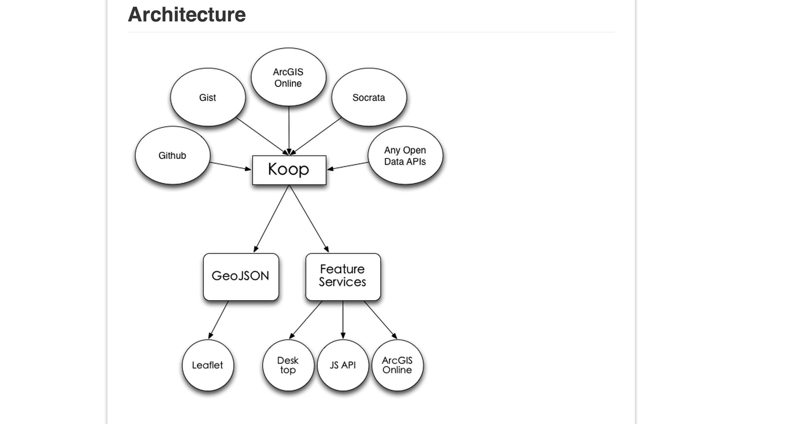
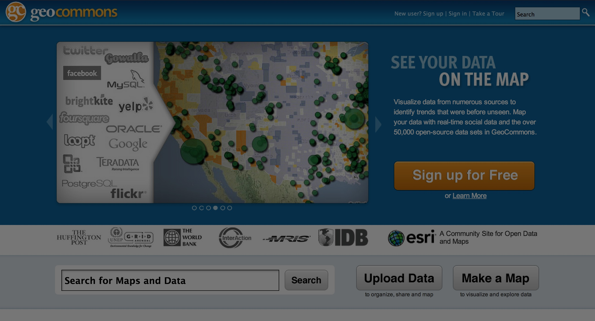

OSM & Esri State of the Map 2014
me: @cwhelm
Esri Community Maps
OSM data in Esri basemaps
Christine White @eggwhites
GeoJSON as FeatureServices
q: Why should you care?
a: ETL

 Geocommons!!
ETL for APIs
ETL for Open Data
It's about Interoperability
also FeatureService proxy from ArcGIS Online
Exports geojson, kml, csv, shp
Also it's R & D

Vector Tiles <3
UTF Grids
PNG Tiles (CartoCSS)
Mapnik Vector Tiles!
any. geo. api.
any. geo. data.
Raw Data?
Case: climate data
 vector tiles
vector tiles  viz'd
viz'd Finally OSM
Discovery, exploration, & direct access
for end users
for GIS users
1. Ingest the planet w/osm2pgsql
2. API Structure?
Counting the data by area
Find points, lines, polygons
Drilling down...
indexing
a bit further
REST
Discovery.
Access Data
Mime types: .kml, .csv, .zip
Piping to geojsonio is the shit
What's Next
me: @cwhelm